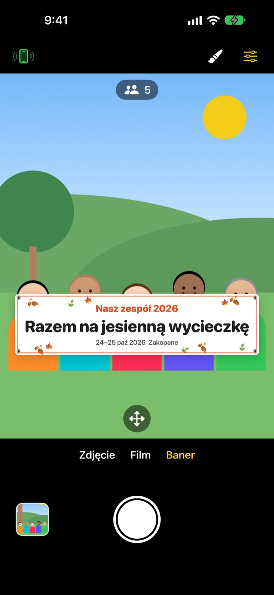
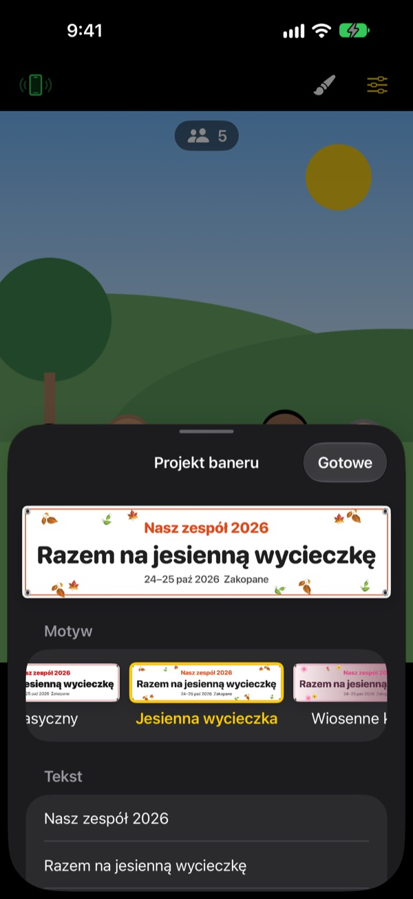

Zdjęcie grupowe z banerem.
Bez drukowania banera.
Wpisz tekst, wybierz motyw, a baner stanie tuż przed grupą. iPhone znajomego po jednym skanie kodu QR zamienia się w pilota, więc na zdjęciu jest też osoba, która je robi.
Wszystkie funkcje są bezpłatne. Wymaga iOS 17 lub nowszego.

Zrób własny baner
Zmień tekst i stuknij motyw. Po naciśnięciu migawki, tak jak w aplikacji, ruszy 3-sekundowe odliczanie.
Zamawiasz baner dla jednego zdjęcia?
Zamawiasz go, taszczysz na wyjazd, a potem nikt nie wie, gdzie go schować. A że nie ma kto zrobić zdjęcia, ktoś zawsze zostaje poza kadrem. ShutterLink stawia baner w kadrze i zamienia iPhone’a znajomego w pilota, żeby na zdjęciu z banerem byli wszyscy.
Baner na Twoją okazję w minutę
Wybierz jeden z 13 motywów, np. jesienną wycieczkę, wiosenne kwiaty, imprezę na koniec roku, urodziny, dzień sportu, rozdanie dyplomów, ślub czy warsztaty firmowe, i wpisz do trzech wierszy własnego tekstu.
Zmień tło, czcionkę, ozdoby, kolory i proporcje, dodaj swoje logo. Do wyboru tkanina, winyl albo papier: baner z tkaniny ugina się, marszczy i faluje na wietrze jak prawdziwy.

Pilot bez instalowania czegokolwiek
Stuknij przycisk pilota w lewym górnym rogu, a pojawi się kod QR. Znajomy skanuje go zwykłym Aparatem, a ShutterLink Remote od razu otwiera się jako App Clip i łączy.
Na podglądzie na żywo w pilocie widać nawet baner, więc kadrujesz i naciskasz migawkę. Każde zdjęcie od razu trafia na iPhone’a z pilotem, więc znajomy bez aplikacji może je zapisać i udostępnić na miejscu.
Trzy kroki na start
- 1
Postaw iPhone’a
Otwórz ShutterLink i postaw telefon na statywie albo półce.
- 2
Ustaw baner
Wybierz na dole Baner, ustaw pędzlem tekst i motyw, a potem stuknij podłoże, gdzie stanie grupa.
- 3
Podnieś dłoń
Podnieś dłoń albo naciśnij migawkę na pilocie. Samowyzwalacz odliczy i zrobi zdjęcie.
Stworzone do zdjęć grupowych
- Gest dłonią · migawka na klaśnięcie
- Podnieś otwartą dłoń w stronę aparatu albo raz głośno klaśnij, żeby uruchomić samowyzwalacz
- Migawka na uśmiech
- Robi zdjęcie sama, gdy wszyscy uśmiechają się z otwartymi oczami
- Samowyzwalacz 3 · 5 · 10 · 20 · 30 s
- Głos odlicza, lampa błyska w rytm, a pilot wibruje w dłoni
- Poproś wszystkich, by patrzyli w obiektyw
- Stuknij, a iPhone robiący zdjęcie zawoła na głos, żeby wszyscy spojrzeli w obiektyw
- Seria 3 · 5 zdjęć
- Wybiera najlepsze ujęcie, na którym wszyscy mają otwarte oczy. W galerii możesz wybrać inne
- Liczba osób · krawędzie · poziomica
- Liczy osoby w kadrze, ostrzega, gdy ktoś jest przy krawędzi, i pokazuje poziomicę, gdy telefon się przechyla
- Interwał od 3 s do 1 min
- Uchwyć zachód słońca albo postęp pracy w równych odstępach
- Sterowanie aparatem
- Ostrość i ekspozycja stuknięciem, korekta ekspozycji, lampa, siatka, zoom od 0,5x do 10x zależnie od modelu, przedni i tylny aparat, wideo
- Tryb prosty
- Pilot pokazuje tylko jeden duży przycisk migawki, z którym każdy sobie poradzi
- Przyciski głośności · Sterowanie aparatem
- Rób zdjęcia bezpośrednio na iPhonie z aparatem, bez pilota
W trybie banera nie działają lampa, zdjęcia seryjne, zoom ani przedni aparat. Samowyzwalacz, migawka na dłoń i pilot działają normalnie.
Wszystkie funkcje są bezpłatne
Za darmo
- Tryb banera i 13 motywów
- Pilot bez instalacji (App Clip)
- Migawka na dłoń, klaśnięcie i uśmiech, samowyzwalacz
- Najlepsze ujęcie, liczenie osób, poziomica
- Wideo i zdjęcia interwałowe
Napiwek (opcjonalnie)
- W Ustawieniach możesz wysłać mały, średni albo duży napiwek
- Napiwek niczego nie odblokowuje ani nie blokuje
To nie subskrypcja. Płacisz raz, tylko gdy dajesz napiwek.
Bez reklam i bez zakładania konta.
Najczęstsze pytania
Czego potrzebuję?
Zainstaluj ShutterLink na iPhonie, który robi zdjęcia (iOS 17 lub nowszy). Na iPhonie z pilotem nic nie trzeba instalować, internet jest potrzebny tylko przy pierwszym otwarciu App Clip. Włącz Bluetooth na obu i trzymaj je blisko siebie, zwykle do 10 m.
Skanuję kod QR, ale App Clip się nie otwiera.
Sprawdź, czy iPhone z pilotem ma internet. Możesz też wpisać w ShutterLink Remote czterocyfrowy kod z iPhone’a robiącego zdjęcie i stuknąć Połącz. Upewnij się też, że App Clip nie są zablokowane w Ustawienia › Czas przed ekranem › Ograniczenia treści i prywatności.
Zawiesza się na „Szukanie aparatu…”.
ShutterLink musi być otwarty na ekranie iPhone’a robiącego zdjęcie. Sprawdź na obu telefonach, czy Bluetooth jest włączony w Ustawienia › Bluetooth. Kod zmienia się przy każdym otwarciu aplikacji, więc jeśli otworzyłeś ją ponownie, użyj nowego kodu QR lub kodu i stuknij Spróbuj ponownie.
Widzę „Odmowa dostępu do Bluetooth”.
Włącz ShutterLink w Ustawienia › Prywatność i ochrona › Bluetooth. Pilot to App Clip i może go nie być na liście. Wtedy zeskanuj kod QR jeszcze raz i stuknij Pozwól, gdy pojawi się pytanie.
Podgląd na żywo się tnie albo jest rozmazany.
Podgląd jest celowo pomniejszony, żeby przechodził przez Bluetooth. Zdjęcia i filmy zapisują się w pełnej jakości iPhone’a robiącego zdjęcie. Ściany, ludzie albo duża odległość mogą powodować przycięcia, ale migawka i pozostałe funkcje działają dalej.
Gdzie są moje zdjęcia?
W Zdjęciach na iPhonie robiącym zdjęcie i w galerii aplikacji. Pilot też dostaje kopię, ale sam jej nie zapisuje, więc zapisz ją lub udostępnij przed zamknięciem pilota. Jeśli w Zdjęciach nic się nie pojawia, zezwól ShutterLink w Ustawienia › Prywatność i ochrona › Zdjęcia.
Moje filmy nie mają dźwięku.
Włącz ShutterLink w Ustawienia › Prywatność i ochrona › Mikrofon.
Czy mogę połączyć kilka pilotów?
Tak. Kilka iPhone’ów może połączyć się naraz tym samym kodem QR lub kodem, a każdy z nich wyzwala ten sam aparat.
Połączenie zrywa się podczas robienia zdjęć.
Gdy ShutterLink jest otwarty, ekran nie gaśnie sam. Zablokowanie telefonu bocznym przyciskiem lub przejście do innej aplikacji zrywa połączenie, więc podczas zdjęć trzymaj aplikację na ekranie.
Czy moje zdjęcia są gdzieś wysyłane?
Nie. Oba iPhone’y łączą się bezpośrednio przez Bluetooth, a zdjęcia i filmy zostają tylko na iPhonie robiącym zdjęcie i połączonym pilocie. Działa też w górach czy na plaży bez zasięgu i nie wymaga konta.
Nadal nie działa albo znalazłeś błąd? Napisz na leeo@kakao.com. Podaj modele i wersje iOS obu iPhone’ów, wtedy sprawdzimy to szybciej.